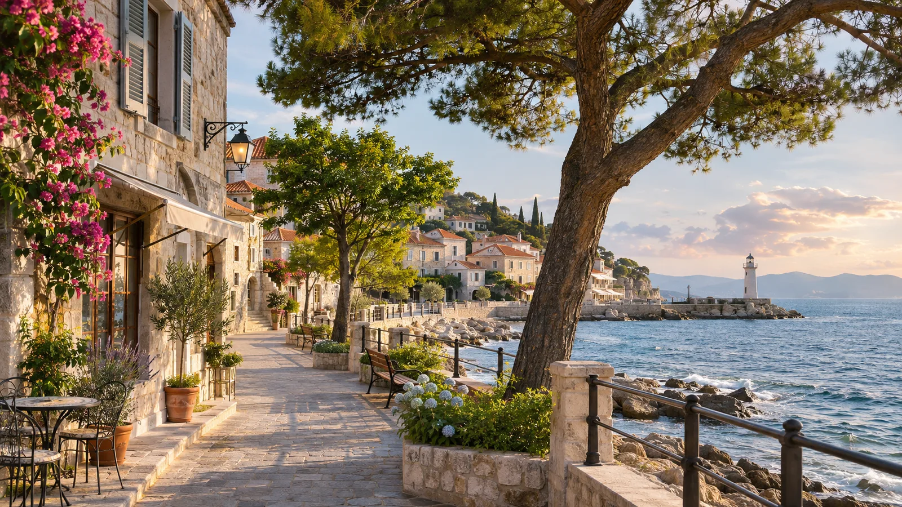
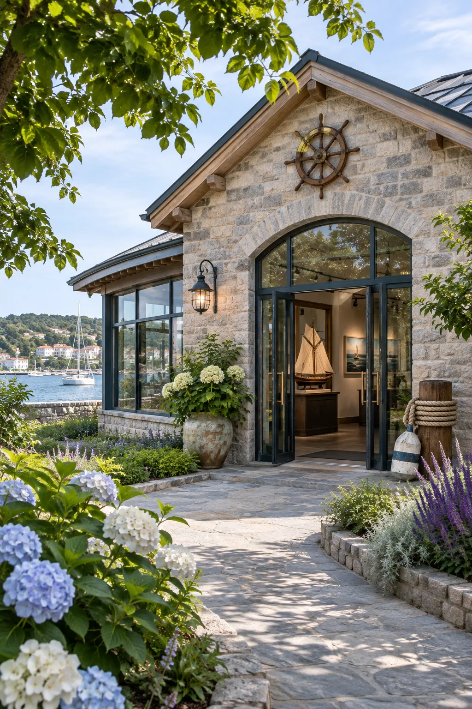

風凪駅に集合
南口・時計塔前
港の遊歩道へ出発
海沿いの道を歩きます。
海の文化館に到着
展示を見学します。
昼食
港周辺で自由昼食。
灯台広場へ
展望デッキを訪れます。
街並みを散策
店先を見ながら歩きます。
宿に到着
海辺の宿（架空）。
夜の港を眺める
散策は自由参加の表示例です。

架空の旅のしおり / DESIGN SAMPLE
04 / 14 — 04 / 17
PLACE / 旅先の風景 風凪の海辺
架空の場所を表現した生成画像です。
4日間の予定
日付を選ぶと、その日の予定を時刻順に確認できます。
宿を出発
丘の庭園へ。
丘の温室を見学
ガラスの温室と植物を楽しみます。
庭園を出発
集合は入口の案内板前。
丘の宿に到着
夕食は宿で。
宿を出発
工房通りへ。
陶芸工房を訪問
器づくりを体験します。
昼食
工房通りの周辺で。
自由散策
小さな店を巡ります。
工房通りを出発
通りの入口に集合。
港の宿に到着
荷物を置いて夕食へ。
夕食
街の食堂で。
宿へ戻る
翌日の準備をします。
4月17日（土） / 4日目
海辺の時間を、
持ち帰る
最終日は駅周辺で過ごします。
- 食事
- 朝：宿 / 昼：自由食 / 夕：各自
宿を出発
海辺へ。
朝の散歩
遊歩道を歩きます。
昼食と自由時間
駅周辺で。
風凪駅に集合
南口・時計塔前。
風凪駅で解散
４日間の旅はここまで。
新着情報
日程や集合に変更があった場合、ここに表示します。
集合場所を確認してください＋
初日は風凪駅の南口、時計塔前に集まる設定です。これは架空のお知らせです。
４日間の日程を掲載しました＋
日付を選ぶと、各日の予定を確認できます。
この旅で、出会うもの。
旅で訪れる順に、場所をたどる。

01
02
準備も、
旅のはじまり。
持ち物をそろえたら、チェックを。チェックは、このブラウザに保存されます。
これは架空の旅の持ち物リストです。
0 / 12
準備できたもの
当日、すぐ使うもの
4日間の身支度
歩く、見つける、備える
MAKE IT OUR JOURNEY.